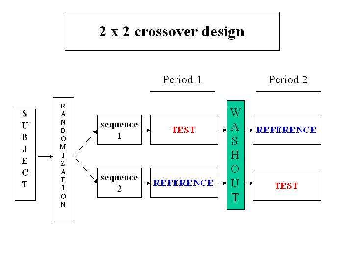
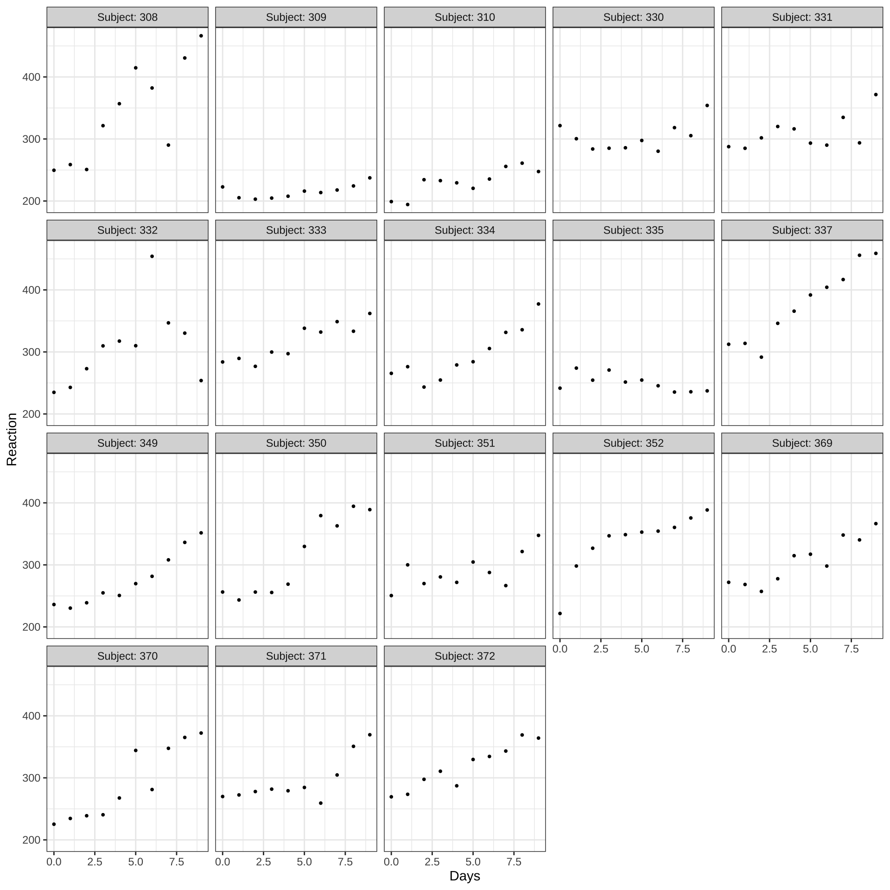
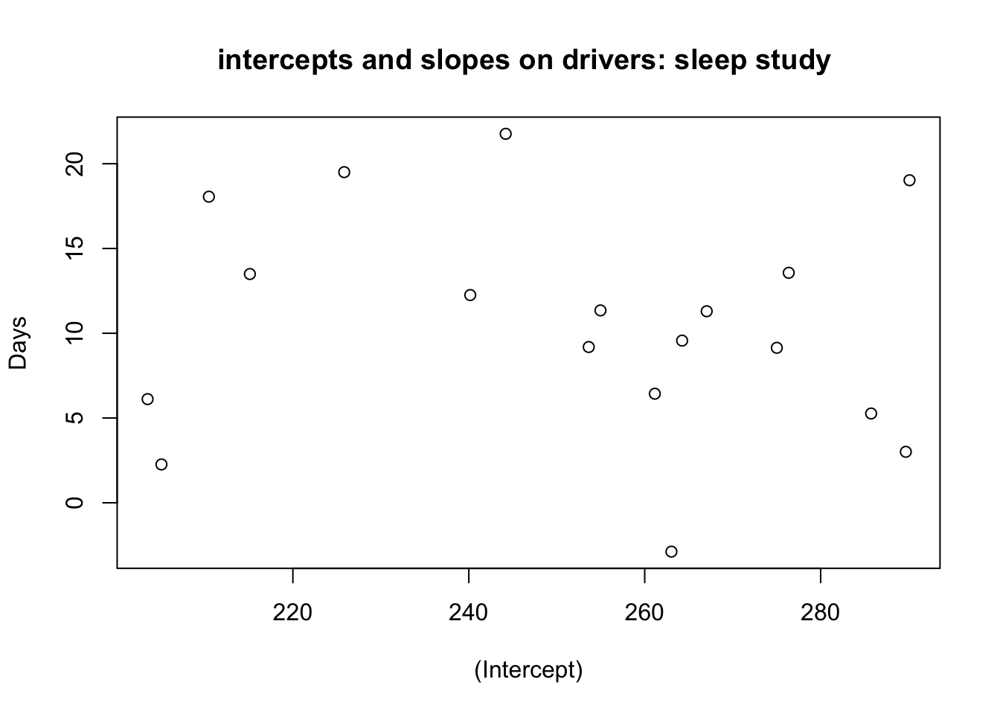
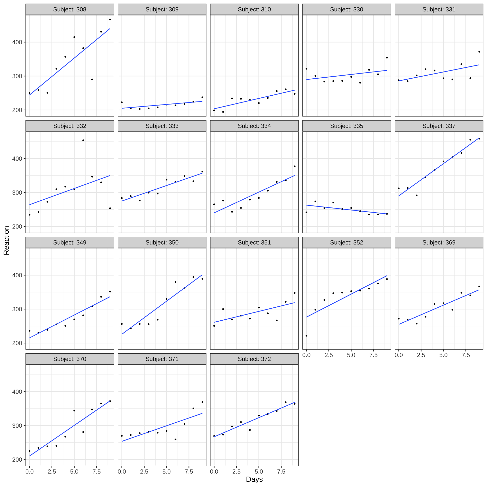
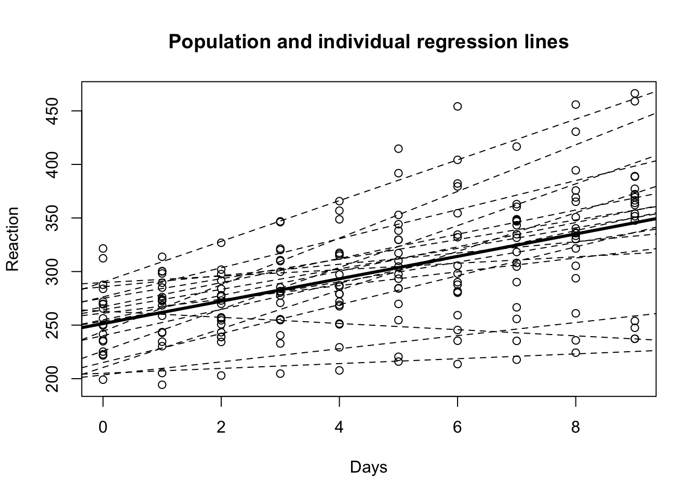

library(tidyverse)
library(ggplot2)
library(faraway)
library(alr4)
library(MASS)
library(knitr)
library(kableExtra)
library(lme4)
library(lmerTest)7 임의효과
7.1 필요한 패키지와 함수
7.2 독립표본과 대응표본
서로 다른 두 처리의 효과(treatment effect)를 비교하기 위하여 주로 사용되는 방법은 두 개의 독립표본(independent sample)을 비교하는 t-검정법이다. 서로 독립인 두개의 집단(구성원이 겹치지 않는 집단)에 서로 다른 처리를 적용한 뒤에 관측된 자료의 표본 평균을 비교하여 두 개의 처리 효과의 차이를 통계적으로 검정하는 방법이다. t-검정을 위한 분포 가정은 다음과 같다.
\[ x_1,x_2, \dots x_{n} \sim_{iid} N(\mu_1, \sigma^2) \quad y_1,y_2, \dots y_{n} \sim_{iid} N(\mu_2, \sigma^2) \]
위의 가정을 다음과 같은 평균모형(mean model)로 표현할 수 있다.
\[ x_i = \mu_1 + e_{i1}, \quad y_i = \mu_2 + e_{i2} \tag{7.1}\]
여기서 \(e_{i1}\)와 \(e_{i2}\)들은 모두 독립이며 \(N(0,\sigma^2)\)을 따르는 오차들이다.
여기서 확률변수 \(x\)와 \(y\)는 서로 독립이고 각 관측값 \(x_1,x_2, \dots x_{n_1}\)과 \(y_1,y_2, \dots y_{n_2}\)들도 각각 모두 독립이다. 분포가정에서 다른 것은 확률변수 \(x\)와 \(y\)의 평균이 다르다.
이러한 가정 하에서 다음의 두개의 가설검정을 할 수 있는 방법이 t-검정법이며
\[ H_0 : \mu_1 = \mu_2 \quad \text{vesus} \quad H_1 : \mu_1 \ne \mu_2 \tag{7.2}\]
검정통계량은 다음과 같이 주어진다.
\[ t = \frac{ \bar x -\bar y} {s_p \sqrt{\tfrac{1}{n} + \tfrac{1}{n}}} \tag{7.3}\]
여기서 \(\bar x\)와 \(\bar y\)는 각 집단의 표본 평균이고 \(s_p^2\)은 합동분산추정량(pooled variance estimator)이다.
\[ s^2_p = \frac{\sum_{i=1}^n (x_i -\bar x)^2 + \sum_{i=1}^n (y_i -\bar y)^2 }{2n-2} \]
이제 두 개의 처리를 비교하는 경우, 독립 표본이 아닌 경우를 고려해 보자.
독립 표본이 아닌 대표적인 경우가 대응표본(또는 쌍표본)에 대한 t-검정이다(paired t-test). 대응표본 검정에서는 하나의 개체에 두 개의 처리를 모두 적용하여 각 처리에 대한 반응값을 쌍 \((x_i,y_i)\)으로 얻는다.
예를 들어 최초로 허가 받은 약품과 복제약의 생물학적동등성(bioequivalence)을 입증하는 실험에서는 한 사람에게 최초허가약을 투여하여 약의 효과를 보고 일정 시간이 지난 뒤 복제약을 같은 사람에게 투여하여 그 효과를 측정한다. 다른 예로서 두 개의 눈병 치료제를 각각 누에 투여하여 효과를 비교하는 경우도 이러한 대응표본에 속한다. 넓은 의미에서 일란성 쌍둥이에게 각각 다른 처리를 하여 비교하는 것도 대응비교라고 할 수 있다.

가장 단순한 대응비교로서 각 개체애 대하여 두 개의 처리에 대한 대응표본 \((x_i,y_i)\)를 관측한다고 가정하자.
이에 대한 분포 모형은 다음과 같다.
\[ d_i = x_i -y_i \sim_{iid} N(\delta,\sigma^2) \text { where } \delta = \mu_1-\mu_2 = E(x)-E(y) \]
대응비교에서 사용되는 t-통계량은 다음과 같다.
\[ t = \frac{ \bar d} {s_d / \sqrt{n}} =\frac{ \bar x -\bar y} {s_d / \sqrt{n}} \tag{7.4}\]
여기서 \(s^2_d\)는 \(d_1,d_2,\dots ,d_n\)의 표본분산이다.
\[ s^2_d = \frac{\sum_{i=1}^n (d_i -\bar d)^2}{n-1} \]
위에서 알아본 독립표본에 의한 비교와 대응표본에 의한 비교가 다른 점은 무었일까 생각해 보자.
표본의 비교가 다른 개체에서 추출된 독립인 관측치를 이용하는지 또는 같은 개체에서 추출된 대응하는(독립이 아닌) 관측치를 이용하는지에 따라서 서로 다른 t-통계량을 사용한다. 식 7.3 과 식 7.4 에 나타난 t-통계량을 비교하면 분자에 나타난 통계량은 효과의 차이를 나타내는 두 개의 평균의 차이로서 기본적으로 동일하다\((\bar d =\bar x -\bar y)\). 하지만 분모에서는 분자에 나타난 통계량의 표본오차(standard error)를 나타내는 양으로서 서로 다르다.
독립표본에서는 표본의 평균이 서로 독립이므로 다음과 같이 평균의 차이에 대한 분산이 각각의 분산의 합과 같으므로 이에 대한 추정량으로서 합동분산추정량을 이용하였다.
\[ Var(\bar x - \bar y) = Var(\bar x) + Var(\bar y) \tag{7.5}\]
대응표본에서는 위의 식 7.5 을 적용할 수 없다. 왜냐하면 두개의 표본 평균이 서로 독립이 아닐 가능성이 매우 높기 때문이다. 같은 개체에서 나온 관측치는 어떠한 형태로든 서로 관계가 있을 가능성이 높기 때문에 독립을 함부로 가정할 수 없다. 예를 들어 생물학적동등성 실험에서는 약 효과의 차이보다 약이 몸에 흡수되는 개인적인 체질이 관측값에 더 큰 영향을 줄 수 있다.
7.3 임의효과
확률변수 \(x\)와 \(y\)가 독립이 아닌 경우 두 모형균의 차이를 비교하기 위하여 비교에 사용된 통계양은 두 확률변수의 차이다.
\[ d_i = x_i - y_i \]
여기서 두 개의 확률변수의 차이를 이용할 때 암시적인 가정은 두 개의 확률변수의 차이를 내면 두 변수에 공통적으로 포함된 개인의 특성이 서로 상쇄되어 처리의 차이만이 확률변수 \(d_i\)에 존재한다는 것이다. 지금 설명한 대응비교 모형의 합리적인 가정을 요약하면 다음과 같다.
- 개인의 특성을 반영하는 공통 요인이 두 변수에 모두 영향을 미친다.
- 따라서 두 관측값 \((x_i,y_i)\)가 독립이 아니다
- 두 관측값의 차이를 내면 공통요인이 서로 상쇄되어 처리효과만 남는다.
\[ E(d_i) = \mu_1 - \mu_2 \]
위의 가정을 구현할 수 있는 대응비교 모형을 다음과 같은 가법모형(additive models)로 표현할 수 있다.
\[ x_i = \mu_1 + a_i + e_{i1}, \quad y_i = \mu_2 + a_i + e_{i2} \tag{7.6}\]
여기서 \(a_i\)는 두 확률변수 \((x_i,y_i)\)에 공통으로 포함된 개인적인 특성을 나타내는 요인이며 위의 식 7.6 는 식 7.1 에 공통요인 \(a_i\)가 추가된 형태이다.
두 확률변수 \((x_i,y_i)\)가 종속이기 위해서는 다음과 같은 가정을 이용할 수 있다.
\[ a_i \sim N(0, \sigma^2_a), \quad e_{i1} \sim_{iid} N(0, \sigma^2_e) \quad e_{i2} \sim_{iid} N(0, \sigma^2_e) \] 여기서 \(a_i\)가 평균이 0이고 분산이 \(\sigma_a^2\) 인 확률변수이다. 이러한 요인을 임의효과(random effect) 라고 하며 모수(parameter)인 평균 \(\mu_i\)은 고정효과(fixed effect)라고 부른다. \(e_{i1}\)와 \(e_{i2}\)들은 모두 독립이며 평균이 \(0\) 이고 분산이 \(\sigma^2_e\)인 정규분포를 따르는 오차들이다. 또한 \(a_i\)와 (\(e_{i1}\),\(e_{i2}\))도 독립이다.
위와 같은 가정에서 두 변수의 차이를 내면 공통요인인 \(a_i\)가 제거되어 두 처리의 차이만이 남게되며 \(x_i\)와 \(y_i\)는 분포의 가정상 독립이 아니다.
\[ \begin{aligned} d_i &= x_i -y_i \\ &= \mu_1+ a_i + e_{i1} -(\mu_2+ a_i + e_{i2}) \\ &= \mu_1 -\mu_2 +(e_{i1}-e_{i2}) \\ &= \mu_1 -\mu_2 +e^*_i \end{aligned} \]
\[ \begin{aligned} Cov(x_i,y_i) &= Cov(\mu_1+ a_i + e_{i1},\mu_2+ a_i + e_{i2}) \\ & = Cov(a_i, a_i) \\ & = Var(a_i) \\ & = \sigma^2_a \end{aligned} \]
다음 절에서는 여기서 논의한 독립표본과 대응표본의 개념 및 추정법을 일반적인 선형모형으로 확장하여 체계적인 비교를 해볼것이다.
7.4 일원배치 모형
7.4.1 고정효과 모형
먼저 일원배치 요인계획(one-way factor design)이용한 실험을 생각해 보자. 고려하는 요인의 수준의 개수를 \(I\)라고 하면 \(I\)개의 수준 중에 하나를 임의로 선택하여 실험대상에 적용하는 임의화 방법으로 각 수준마다 \(J\)의 관측값을 얻어다고 하자. 다음과 같은 ANOVA모형을 고려하여 분석을 할 수 있다.
\[ y_{ij} = \mu + \alpha_i + e_{ij}, \quad i=1,2,\dots,I \text{ and } j=1,2,\dots, J \tag{7.7}\]
여기서 \(e_{ij}\)는 서로 독립이며 \(N(0,\sigma_e^2)\)를 따르는 오차항이다.
ANOVA 모형 식 7.7 에서 \(\mu\)와 \(\alpha_i\)는 고정효과(fixed effect)라고 부르며 추정해야 할 모수(parameter)이다. 세심하게 설계된 실험에서는 수준에 대한 효과 \(\alpha_i\)의 값이 변하지 않게 통제할 수 있는 실험 환경이 가능하다고 생각할 수 있으므로 \(\alpha_i\)의 값을 변하지 않는 고정효과로 보는 것이 합리적이다.
일원배치 요인계획을 이용한 실험에서는 주요 관심사가 수준간의 차이가 있는지에 대한 것이며 이는 제곱합을 이용한 ANOVA table에서 F-test를 이용하여 검정할 수 있다.
\[ H_0: \alpha_1 = \alpha_2 =\dots = \alpha_I \]
7.4.2 임의효과 모형
이제 다음과 같은 자료의 추출을 생각해 보자. 서울시 A구에 초등학교가 20개있다고 하자. 20개의 학교중 6개의 학교를을 임의로 추출하고 추출된 학교에 속한 모든 6학년 학생들에게 과학시험을 보게하여 점수를 얻었다. 이러한 자료에서 학생들의 성적은 모두 같지 않을 것이 당연하며 가장 점수가 낮은 학생부터 높은 학생까지 점수의 변동(variation)이 존재한다. 변동의 요인은 무었일까? 학생의 개인의 차이(예:학생의 지능, 노력 정도, 학습 환경)도 변동의 요인이지만 또한 학교의 차이도 변동의 요인이 될 수 있다.
여기서 학교에 대한 요인은 앞 절에서 본 실험 자료에서 나타나는 고정 효과에 의한 요인과는 성격이 틀리다. 20개의 학교라는 모집단에서 6개의 학교가 추출되었으며 이 때 학교의 차이는 설계된 실험에서는 수준에 대한 효과와는 다르게 표본 추출 때문에 생기는 변동이라고 할 수 있다. 또한 같은 학교에 다니는 학생들은 같은 지역과 교사 등 공통적인 요인에 의하여 영향을 받는다고 가정할 수 있다. 따라서 같은 학교에 다는 학생들의 성적이 독립이 아닐 수도 있다.
이러한 효과를 임의효과(random effect)라고 부르며 학생들의 과학점수에 대한 모형을
다음과 같은 임의효과모형(random effects model) 또는 혼합효과모형(mixed effects model)으로 설명할 수 있다.
\[ y_{ij} = \mu + a_i + e_{ij}, \quad i=1,2,\dots,I \text{ and } j=1,2,\dots, J \tag{7.8}\]
여기서 \(a_i\)는 학교의 효과를 나타내는 임의효과이며 서로 독립이고 \(N(0,\sigma_a^2)\)를 따른다. 또한 개인에 대한 효과 또는 오차항 \(e_{ij}\)는 서로 독립이며 \(N(0,\sigma_e^2)\)를 따른다. 임의효과 \(a_i\)와 오차항 \(e_{ij}\)는 서로 독립이다. 고정효과 \(\mu\)는 전체 평균을 나타내는 모수이다. 학교를 추출할 때 그 효과를 분산이 \(\sigma^2_a\)를 가지는 정규모집단에서 추출한다고 가정하는 것이다. 학교를 하나의 군집(cluster)로 생각하고 학교의 효과를 군집효과로 보고 총변동을 설명하고 나머지 변동은 오차의 변동으로 개인의 효과 등으로 설명한다.
\[ Var(y_{ij}) =Var(\mu + a_i + e_{ij}) = Var(a_i) + Var(e_{ij}) = \sigma^2_a + \sigma^2_e \]
식 7.8 로 표현된 임의효과를 포함한 혼합모형(일원배치 임의효과 모형; one-way random effect models)의 가장 큰 특징 중에 하나는 같은 군집에 속하는 관측치들은 서로 독립이 아니며 양의 상관관계가 있다. 위의 예제에서 두 학생 \(j\)와 \(k\)가 같은 학교 \(i\)에 속한다면
\[ Cov(y_{ij},y_{ik}) = Cov( \mu + a_i + e_{ij}, \mu + a_i + e_{ik}) =Cov (a_i, a_i)=\sigma^2_a \]
따라서
\[ corr(y_{ij},y_{ik})= \frac{ Cov(y_{ij},y_{ik})}{\sqrt{Var(y_{ij})Var(y_{ik})} } = \frac{\sigma^2_a }{\sigma^2_a + \sigma^2_e } \]
위의 상관계수를 보면 학교간의 변동의 크기를 나타내는 \(\sigma^2_a\)각 개인간의 변동을 나타내는 \(\sigma^2_e\)보다 상대적으로 클수록 상관계수가 1에 가까와진다. 보통 \(\sigma^2_a\)을 집단간 변동(between-group variance)라 하고 \(\sigma^2_e\)를 집단내 변동(within-group variance)라고 한다. 따라서 \(\sigma^2_a\)와 \(\sigma^2_e\)의 상대적인 크기의 차이에 따라 군집내 관측값의 상관관계가 달라진다.
식 7.8 의 임의효과 모형은 임의효과가 2개 이상인 모형으로 확장될 수 있다. 예제에서 학교를 추출하고 학교내에서 학급을 추출하여 추출된 학급내의 학생들이 시험을 보면 다음과 같은 모형을 적용할 수 있다.
\[ y_{ijk} = \mu + a_i + b_{ij} + e_{ijk} \] 위의 모형에서 \(a_i\)는 \(N(0,\sigma^2_a)\)를 따르는 학교에 대한 임의효과, \(b_{ij}\)는 \(N(0,\sigma^2_b)\)를 따르는 학급에 대한 임의효과, \(e_{ijk}\)는 \(N(0,\sigma^2_e)\)를 따르는 학생에 대한 임의효과 또는 오차항으로 생각할 수 있다.
임의효과 모형에 고정효과가 같이 포함되어 있는 모형을 혼합모형(mixed model)이라고 부르며 반응변수의 변동에 영향을 미치는 요인들 또는 예측변수 중에서 임의효과와 고정효과를 구별하여 정하고 동시에 모형에 포함시킬수 있다. 예를 들어서 학교를 선택하여 과학시험을 볼 경우에 학기가 시작할 떄 과학교수법 두가지 중 하나를 임의화해서 각 학교에 배정하여 배정된 교수법으로 학생을 가르친 후에 시험을 보았다면 교수법에 대한 효과는 고정효과로 볼 수 있다. 따라서 다음과 같은 모형을 고려할 수 있다.
\[ y_{ij} = \mu + \tau_{k(i)} + a_i + e_{ij} \tag{7.9}\]
여기서 \(\tau_{k(i)}\)는 \(i\)번째 학교의 교수법에 대한 고정효과이다(교수법이 배정된 결과에 의하여 \(k(i)=1\) 또는 \(k(i)=2\)이 된다). 이 교수법에 대한 고정효과에 대해서는 두 교수법이 차이가 있는 지에 대한 검정이 주요한 관심사일 것이다 (\(H_0: \tau_1=\tau_2\))
7.5 반복측정자료
반복측정자료(longitudinal data, repeated measurements)는 관측단위안에서 여러 개의 관측값을 측정한 자료의 형식을 말한다.
예를 들어 환자가 병원을 여러 번 방문하고 방문시마다 혈압을 측정하였다면 한 명의 환자에서 반복 측정한 자료는 서로 독립이 아니다. 또한 가구조사(household survey)에서 가구원의 취업 여부, 건겅 상태등을 여러 해동안 매년 측정하는 경우 이러한 자료를 패널자료(panel data) 또는 longitudinal 자료라고 한다. 이렇게 하나의 관측단위 안에서 측정한 자료들은 서로 독립이 아닌 특징이 있고 자료를 분석하는 경우 이러한 자료들의 종속구조를 고려하는 모형을 사용하는 것이 적절하다. 이렇게 반복측정자료에서 반복자료들의 공분산구조를 설정하는 통계적 방법들은 다양하지만 대표적으로 쉽게 사용할 수 있는 방법이 임의효과를 포함한 혼합모형을 사용하는 방법이다.
lme4 패키지에 자료인 spleepstudy는 화물트럭 운전사들에 대한 수면부족 현상에 대하여 연구한 자료이다. 18명의 운전자들이 매일 3시간의 수면(부족한 수면)을 하면서
매일 일정한 동작의 반응시간을 10일동안 반복적으로 측정한 자료가 있다. 한명의 운전사에게 10일 동안의 반응에 대한 측정자료 10개가 존재하므로 이는 반복측정 자료이며 이러한 10개의 자료는 독립이 아니다. 일단 자료의 구조를 살펴보자. 반응변수 Reaction은 반응시간(ms)를 나타내며 설명변수로서 Days는 날짜(\(t=0,1,2,\dots,9\)), Subject 는 운전자의 고유번호를 나타낸다.
library(lme4)
library(lmerTest)
str(sleepstudy)'data.frame': 180 obs. of 3 variables:
$ Reaction: num 250 259 251 321 357 ...
$ Days : num 0 1 2 3 4 5 6 7 8 9 ...
$ Subject : Factor w/ 18 levels "308","309","310",..: 1 1 1 1 1 1 1 1 1 1 ...head(sleepstudy,n=20) Reaction Days Subject
1 249.5600 0 308
2 258.7047 1 308
3 250.8006 2 308
4 321.4398 3 308
5 356.8519 4 308
6 414.6901 5 308
7 382.2038 6 308
8 290.1486 7 308
9 430.5853 8 308
10 466.3535 9 308
11 222.7339 0 309
12 205.2658 1 309
13 202.9778 2 309
14 204.7070 3 309
15 207.7161 4 309
16 215.9618 5 309
17 213.6303 6 309
18 217.7272 7 309
19 224.2957 8 309
20 237.3142 9 309각 운전자에 대한 10일 간의 반응속도가 시간에 따라 어떻게 변하는 가를 알아보자. 전반적으로 시간이 지나면서 운전자들의 반응시간이 증가하고 있음을 알 수 있다. 또한 개인 별로 반응 시간의 변화와 패턴이 다르다는 것을 알 수 있다.
library(ggplot2)
ggplot(sleepstudy, aes(x=Days, y=Reaction)) +
geom_point(size=0.5) +
stat_smooth(method = "lm",se=F,size=0.5)+
facet_wrap("Subject", labeller = label_both)+
theme_bw()Warning: Using `size` aesthetic for lines was deprecated in ggplot2 3.4.0.
ℹ Please use `linewidth` instead.`geom_smooth()` using formula = 'y ~ x'
7.5.1 개체들의 선형 회귀모형
각 운전자 \(i\) 에 대하여 10일간 측정한 반응속도 \(y_{ij}\)를 시간에 대하여 선형모형으로 적합하면 개인별 회귀직선을 다음과 같이 표시할 수 있다.
\[ y_{ij} = \beta_{0i} + \beta_{1i} t_j + e_{ij},\quad i=1,2,\dots,18,\quad j=1,2,\dots,10 \tag{7.10}\]
여기서 오차항 \(e_{ij}\)은 서로 독립이며 \(N(0, \sigma^2_e)\)를 따른다고 가정한다.
행렬식으로는 다음과 같이 나타낼 수 있다.
\[ \pmb y_i =\pmb X_i \pmb \beta_{i} +\pmb e_i \]
여기서 \[ \pmb y_i=\begin{bmatrix} y_{i1} \\ y_{i2} \\ \vdots \\ y_{i,10} \end{bmatrix},~ \pmb X_i = \begin{bmatrix} 1 & 0 \\ 1 & 1 \\ \vdots & \vdots \\ 1 & 9 \end{bmatrix}, \pmb \beta_i= \begin{bmatrix} \beta_{0i} \\ \beta_{1i} \\ \end{bmatrix}, \pmb e_i= \begin{bmatrix} e_{i1} \\ e_{i2} \\ \vdots \\ e_{i,10} \end{bmatrix} \]
위의 식에서 \(\beta_{0i}\)와 \(\beta_{1i}\)는 \(i\)번째 운전사의 반응속도를 설명내는 회귀직선의 절편과 기울기이다. 절편 \(\beta_{0i}\)는 실험 시작때 반응속도를 의미하고 기울기 \(\beta_{1i}\)는 실험이 진행되는 동안 반응속도가 어떻게 변하는 지 변화의 방향과 크기를 보여준다. 함수 lmList를 아래와 같이 이용하면 식 식 7.10 을 각 운전사마다 적합시켜 각각의 절편과 기울기를 구할 수 있다.
lmf1 <- lmList(Reaction ~ Days | Subject, sleepstudy)
lmf1Call: lmList(formula = Reaction ~ Days | Subject, data = sleepstudy)
Coefficients:
(Intercept) Days
308 244.1927 21.764702
309 205.0549 2.261785
310 203.4842 6.114899
330 289.6851 3.008073
331 285.7390 5.266019
332 264.2516 9.566768
333 275.0191 9.142045
334 240.1629 12.253141
335 263.0347 -2.881034
337 290.1041 19.025974
349 215.1118 13.493933
350 225.8346 19.504017
351 261.1470 6.433498
352 276.3721 13.566549
369 254.9681 11.348109
370 210.4491 18.056151
371 253.6360 9.188445
372 267.0448 11.298073
Degrees of freedom: 180 total; 144 residual
Residual standard error: 25.59182cor(coef(lmf1)) (Intercept) Days
(Intercept) 1.0000000 -0.1375534
Days -0.1375534 1.0000000plot(coef(lmf1),main="intercepts and slopes on drivers: sleep study ")
18개의 절편과 기울기는 큰 상관관계는 없는것으로 보이지만 약한 음의 상관계수가 나타났다.
절편과 기울기에 대한 분포를 보기 위하여 상자그림을 그려보면 평균을 중심으로 대칭인 분포를 보이고 있다.
boxplot(coef(lmf1)[1])
boxplot(coef(lmf1)[1])
이제 각 운전사에 대하여 회귀식을 따로 적합하지 않고 전체 운전사들의 자료를 모두 합쳐서 하나의 회귀식을 고려할 수 있다. 개체의 특성을 반영하는 모형이 아닌 전체 집단에 대한 평균적인 모형(population model)을 고려하는 것이다.
\[ y_{ij} = \beta_0 + \beta_1 t_j + e_{ij} ,\quad i=1,2\dots,18, j=1,2, \dots, 10 \tag{7.11}\]
여기서 오차항은 서로 독립이며 \(N(0, \sigma^2_e)\)를 따른다고 가정한다.
위와 같은 전체 운전사 집단의 관측값을 운전자의 특성을 고려하지 않고 세운 모형으로서 시간에 따른 반응시간에 대한 모집단의 전체적인 평균적 함수 관계를 파악하는 모형이라고 할 수 있다.
lmpop <- lm(Reaction ~ Days, sleepstudy)
summary(lmpop)
Call:
lm(formula = Reaction ~ Days, data = sleepstudy)
Residuals:
Min 1Q Median 3Q Max
-110.848 -27.483 1.546 26.142 139.953
Coefficients:
Estimate Std. Error t value Pr(>|t|)
(Intercept) 251.405 6.610 38.033 < 2e-16 ***
Days 10.467 1.238 8.454 9.89e-15 ***
---
Signif. codes: 0 '***' 0.001 '**' 0.01 '*' 0.05 '.' 0.1 ' ' 1
Residual standard error: 47.71 on 178 degrees of freedom
Multiple R-squared: 0.2865, Adjusted R-squared: 0.2825
F-statistic: 71.46 on 1 and 178 DF, p-value: 9.894e-15with(sleepstudy, plot(Days, Reaction,main="Population and individual regression lines"))
abline(a=coef(lmpop)[1], b=coef(lmpop)[2],lwd=3)
for ( i in 1:18 ) {
xx <- as.numeric(coef(lmf1)[i,])
abline(a=xx[1],b=xx[2], lty=2)
}
이제 각 운전사에 대하여 개체별로 적합한 회귀식의 계수들\((\hat \beta_{0i}, \hat \beta_{1i})\) 와 전체집단에 적한한 회귀식의 계수 \((\hat \beta_{0}, \hat \beta_{1})\)의 관계를 보면 개체별로 회귀 계수들의 평균이 전체에 적용한 모형의 계수와 매우 가까운 사실을 알 수 있다.
apply(coef(lmf1),2,mean)(Intercept) Days
251.40510 10.46729 coef(lmpop)(Intercept) Days
251.40510 10.46729 7.5.2 임의계수 모형
앞 절의 모형과 분석에서 알 수 있듯이 한 개체에 대하여 여러 개의 관측값을 측정한 자료에 회귀방정식을 각각 적합시켜보고 또한 개체의 특성을 고려하지않은 전체 모형을 적합해보면 다음과 같은 두 가지 결과를 볼 수 있다.
- 각 개체별 회귀식은 개인의 특성을 반영한다. 즉, 개체에 따라 시간에 따른 반응시간의 변화가 다르게 나타난다.
- 하지만 개인별로 볼 때도 전체적으로는 시간에 따라서 반응시간이 증가하는 경향이 있음을 알 수 있다.
- 전체 자료에 적합한 모형을 보면 개인별로 적합한 모형의 공통적인 성격, 즉 시간에 따른 반응시간의 증가를 알 수 있다.
- 이러한 결과를 보고 각 개인의 변화는 전체적인 변화를 따르면서 각 개인의 특성이 반영되었다고 가정할 수 있다.
위에서 논의하였듯이 전체적인 경향과 개인의 특성을 동시에 고려할 수 있는 모형이 생각할 수 있고 이러한 모형이 다음과 같은 모형이다.
\[ y_{ij} = (\beta_0 + b_{0i}) + (\beta_1 + b_{1i}) t_j + e_{ij} \tag{7.12}\]
식 7.12 는 절편과 기울기가 두 개의 구성 요소로 더해져서 표현된다. 기울기는 \(\beta_1+b_{1i}\)로서 나타내어지며 \(\beta_1\)은 모집단이 가지는 공통적인 경향을 반영하는 모수이고 \(b_{1i}\)는 \(i\) 번째 개체의 특성을 반영한 확률변수이다. 절편도 유사한 형식으로 구성된다.
각 개인에 대한 특성을 나타내는 변수 \((b_{0i}, b_{1i})\) 을 확률변수로 설정하고 이를 모수(\(\beta_0, \beta_1)\) (parameter or fixed effect)와 구별하여 임의효과(random effect)라고 한다. 임의효과는 모집단을 구성하는 개인이 표본에 추출되었다고 생각하며 확률분포를 따른다고 가정한다. 반복측정자료에서 인의효과를 공통으로 가지고 있는 관측치는 독립이 아니게 돼며 따라서 같은 개체에서 나온 관측값은 독립이 아니다.
18명에 대한 회귀직선의 절편과 기울기를 보면 개인의 차이에 따른 변동을 볼 수 있으며 이러한 각 개인간의 변동을 임의효과를 이용하여 다음과 같은 모형을 생각해보자.
\[ \pmb \beta_i= \begin{bmatrix} \beta_{0} \\ \beta_{1} \\ \end{bmatrix} +\begin{bmatrix} b_{0i} \\ b_{1i} \\ \end{bmatrix} , \quad \begin{bmatrix} b_{0i} \\ b_{1i} \\ \end{bmatrix} \sim N \left ( \begin{bmatrix} 0 \\ 0 \\ \end{bmatrix} , \begin{bmatrix} \sigma^2_{b1} & \rho \sigma_{b1} \sigma_{b2}\\ \rho \sigma_{b1} \sigma_{b2} & \sigma^2_{b2} \\ \end{bmatrix} \right ) \]
위의 모형은 각 개인의 회귀직선에서 각 절편과 기울기가 전체평균 \(\beta_0\)와 \(\beta_1\)를 따르며 각 개인의 차이는 전체평균에 임의효과인 \(b_{0i}\)와 \(b_{1i}\)가 더해져서 나타난다는 것을 의미한다. 이변량 임의효과 \(b_{0i}\)와 \(b_{1i}\)는 이변량 정규분포를 따르며 각각의 분산과 상관계수가 \(\sigma^2_{b1}\), \(\sigma^2_{b2}\), \(\rho\)이다.
다른 개체에 대한 임의효과는 서로 독립이며 임의 효과와 오차항은 독립이다. 여기서 오차항은 서로 독립이며 \(N(0, \sigma^2_e)\)를 따른다고 가정한다.
\[ Cov(\pmb b_{i}, \pmb b_{j}) =\pmb 0 \text{ when } i \ne j,\quad Cov(\pmb b_{i}, e_{jk}) =\pmb 0 \text{ for all } i,j,k \]